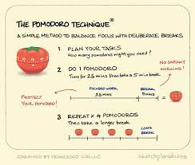

Pomodoro Technique

Description
The Pomodoro Technique is a method to avoid distraction and be more productive.
The basic idea is to break up work into 25 minute periods. After each
period a 5 minute break is given. If you get distracted within the 25
minute period you start the timer over. It's easier to devote 25 minutes
to a task than doing something that may seem endless and the small breaks
help you recharge. After 4 cycles a longer break is taken.
Ingredients
- Timer
- Project
- Small tasks like folding laundry
- Motivation!
Steps
- Find a project that requires a lot of hardwork to accomplish but is worth it
- Set a timer for 25 minutes and work continuously on the project.
for that whole period. If you get distracted restart the timer.
- After 25 minutes of work take a few minutes break to do something
completely different. It could be folding laundry or having a small snack.
- Repeat step 3 for 4 times and then take a longer break
- Stay motivated and keep your mind fresh!